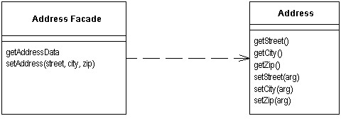

Remote Facade (Парадный вход)

Паттерн проектирования Remote Facade
Описание Remote Facade
Предоставляет общий объединяющий интерфейс для набора методов объекта для улучшения эффективности сетевого взаимодействия.
Паттерн Remote Facade в объектно-ориентированной модели улучшает работу с маленькими объектами, у которых маленькие методы. Маленькие методы открывают большие возможности для контроля и изменения поведения, а также для улучшения понимания клиентом работы приложения. Одно из последствий такого "мелко-молотого" поведения в том, что обычно происходит много взаимодействий между объектами с вызовом множества методов.
В одном адресном пространстве "мелко-молотые" взаимодействия работаю хорошо, но всё меняется, когда происходит взаимодействие между процессами. Удалённые вызовы более затратны, потому что многое надо сделать: иногда данные нужно упорядочить, проверить на безопасность, пакеты должны быть маршрутизированы на свичах. Если два процесса работают на разных краях света, даже скорость света может играть роль. Тяжелая правда в том, что любые межпроцессные взаимодействия на порядок более расточительны, чем анутрипроцессные вызовы. Даже, если оба процесса работают на одной машине. Такое влияние на производительность не может быть упущено из вида, даже приверженцами ленивой оптимизации.
В результате любой объект, который задействован в удалённом взаимодействии, нуждается в более общем интерфейсе, который бы позволил минимизировать количество запросов, необходимых, чтобы сделать что-либо. Это затрагивает не только методы, но и объекты. Вместо того, чтобы запрашивать счёт и все его пункты отдельно, надо считать и обновить все пункты счёта за одно обращение. Это влияет на всю структуру объекта. Надо забыть о благой цели малых объектов и малых методов. Программирование становится всё сложнее, продуктивность падает и падает.
Паттерн Remote Facade представляет собой общий "Фасад" (по GoF) поверх структуры более "мелко-молотых" объектов. Ни один из этих объектов не имеет удалённого интерфейса, а Remote Facade не включает в себя никакой бизнес-логики. Всё, что делает Remote Facade - это транслирует общие запросы в набор небольших запросов к подчинённым объектам.
Использована иллюстрация с сайта Мартина Фаулера.